Triangulation
程度★ 難度★★
三角剖分
平面上散布許多點。只以這些點作為三角形頂點，用線段連接產生三角形，三角形數量越多越好。所有線段形成一個「三角剖分」，通常有許多種。
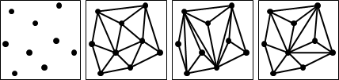因為三角形數量越多越好，所以三角剖分的外圍一定是凸包。
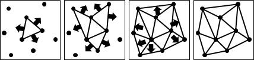三角形的建構順序、建構地點都相當自由，也因此各種凸包演算法都可以順便求得三角剖分。
三角剖分的三角形個數、邊數
計算凸包的三角剖分，再用剩下的點遞迴分割所在的三角形，最後處理共線的點。
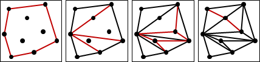令h是凸包點數，令k是其餘點數。凸包的三角剖分得到h-2個三角形；剩下的點，逐次用於三角剖分，每次都多出兩個三角形。由此可知，無論三角剖分長相如何，一個三角剖分固定有(h-2)+2k個三角形，是O(N)。
同理可知，無論三角剖分長相如何，一個三角剖分固定有(2h-3)+3k條邊，亦是O(N)。
這也呼應了平面圖歐拉公式v-e+f=2。
三角剖分的數量
計算不同的三角剖分有多少種，目前除了窮舉法以外沒有更好的演算法，也無人知道這是P問題抑或是NP-Complete問題。
Flip Graph
一個三角剖分，翻轉一條邊，可以得到另一個三角剖分。注意到並不是每一條邊都能翻轉的。
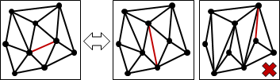二維平面上，給定一個點集合，把所有三角剖分依照翻轉關係連接成一張無向圖，稱作Flip Graph，是連通的。
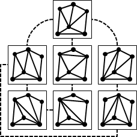Flip Graph有著許多謎團，例如點到點最短路徑（兩個三角剖分之間的最少翻轉次數）、直徑、連接性，目前都沒有演算法。
Tetrahedralization
推廣到三維空間稱作「四面體剖分」。
四面體剖分的Flip Graph目前完全不知道長什麼樣。
Triangulation: Graham's Scan
程度★ 難度★★
仿照「Convex Hull: Graham's Scan」，掃除凸包頂點的過程即可進行三角剖分。一如既往，共線的點不好處理。時間複雜度O(NlogN)，主要取決於排序的時間。
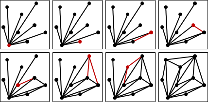Triangulation: Incremental Method
程度★ 難度★★
仿照「Convex Hull: Incremental Algorithm」，如果當前輸入點在三角形內部，則直接連線至三角形頂點；如果當前輸入點在所有三角形外部，則連線至凸包的切點與凹點。要小心當前輸入點在三角形上的情況。時間複雜度O(N^2)。
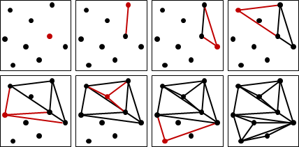如果預先按照XY座標排序所有點（平移的掃描線），就能保證當前輸入點都在所有三角形外部。
當前輸入點與凹點的連線，不超過三角剖分的邊數O(N)；當前輸入點與切點的連線，等同Andrew's Monotone Chain，時間複雜度是O(NlogN)。分開分析，總時間複雜度O(NlogN)。
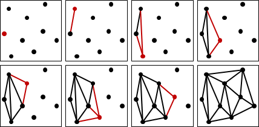Triangulation: Divide and Conquer
程度★ 難度★★
仿照「Convex Hull: Divide and Conquer」，尋找外公切線的過程即可合併左右兩個三角剖分。時間複雜度O(NlogN)。
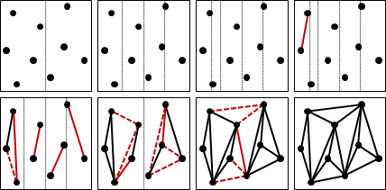Minimum Weight Triangulation
程度★ 難度★
線段長度總和最小的三角剖分，至今時間複雜度仍舊不明。
判斷一個三角剖分是不是線段長度總和最小的三角剖分，則是NP-hard問題。
Minimum Weight Triangulation的用途是製做一個節省印刷墨水的三角剖分。
Acute Triangulation
程度★ 難度★
每一個角都是銳角（小於90°）的三角剖分。目前已經有演算法，但是還沒有一個定論，有興趣的話請自行搜尋論文。
Acute Triangulation的用途是製做一個美觀的三角剖分。
Delaunay Triangulation（Minmax Angle Triangulation）
程度★★ 難度★★
Voronoi Diagram與Delaunay Triangulation
Delaunay是Voronoi的博士班學生。Delaunay Triangulation一開始是從Voronoi Diagram發展來的。
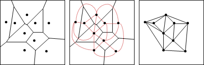Voronoi Diagram連接相鄰的區域中心，就形成Delaunay Triangulation。換句話說就是平面對偶、邊拉直。
Delaunay Triangulation的數量
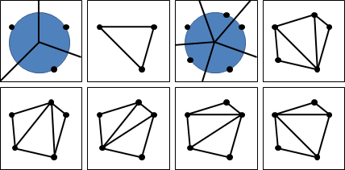只有三點以下共圓，Voronoi Diagram與Delaunay Triangulation只有唯一一種，互相對應。
出現四點以上共圓，Voronoi Diagram仍然只有唯一一種，Delaunay Triangulation則有許多種。
Voronoi Diagram與Delaunay Triangulation互相轉換
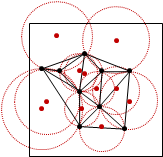因為Voronoi Diagram與Delaunay Triangulation的點數與邊數都是O(N)，實施平面對偶也是O(N)，所以Voronoi Diagram與Delaunay Triangulation互相轉換需時O(N)。
Delaunay Triangulation，連接相鄰的三角形外接圓圓心，再連接凸包上每一條邊的中垂線，就形成Voronoi Diagram。
【待補文字】
外接圓為空圓
只有三點以下共圓，Delaunay Triangulation的每個三角形外接圓，不含其他點。
每個三角形的外接圓，都在圓外。
【待補證明】
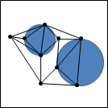Voronoi Diagram與Delaunay Triangulation，聚集了鄰近的點，排斥了偏遠的點。
Voronoi Diagram的外表是中垂線與距離，Delaunay Triangulation的內裡則是圓與角度。
Minmax Angle Triangulation
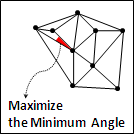Delaunay Triangulation其實是最小角盡量大的三角剖分。
【待補證明】
Delaunay Triangulation: Edge Flip Algorithm
程度★★ 難度★★
隨意求出一個三角剖分。不斷翻轉不符空圓性質的邊，使最小角逐漸增大（或者最小角不變、次小角增大，以此類推），就得到Minmax Angle Triangulation。時間複雜度不明。
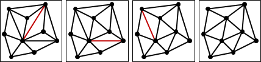【待補證明】
Delaunay Triangulation: Incremental Method
程度★★ 難度★★
online演算法，隨時維護一個Minmax Angle Triangulation。
每當輸入一點，馬上尋找不符空圓性質的三角形們，形成一個多邊形，清除內部的邊，連接當前輸入點與多邊形頂點們，就得到Minmax Angle Triangulation。時間複雜度O(N^2)。
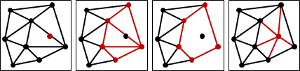採用Flip Edge Algorithm，配合特殊資料結構，可以加速至O(NlogN)。此處略過不提。
Delaunay Triangulation: Divide and Conquer（Under Construction!）
程度★★ 難度★★
O(NlogN)。
Delaunay Triangulation, Voronoi Diagram, Convex Hull, Envelope（Under Construction!）
程度★★ 難度★★
Convex Hull
點座標(x, y)改成(x, y, x^2+y^2)之後，呈現拋物面。
平面與拋物面的交集，投影至XY平面，恰是圓。圓半徑為r，平面與切面距離為r^2。
【待補圖片】
求得新座標的3D Convex Hull：
自下方無限遠處仰視（下凸包投影至XY平面），就是Nearest Point Voronoi Diagram的對偶圖，空圓的三角剖分，也就是Delaunay Triangulation。
自上方無限遠處俯視（上凸包投影至XY平面），就是Farthest Point Voronoi Diagram的對偶圖。
【待補圖片】
Envelope
點座標(x, y)改成(x, y, x^2+y^2)之後，呈現拋物面。
兩個座標，其兩個切面交集，投影至XY平面，恰是中垂線。
【待補圖片】
求得新座標的切面的3D Envelope：
自下方無限遠處仰視（下包絡面投影至XY平面），就是Delaunay Triangulation。
自上方無限遠處俯視（上包絡面投影至XY平面），就是Voronoi Diagram。
【待補圖片】
Compatible Triangulation
程度★★ 難度★
兩個三角剖分，點數相同，每一點相互對應，每一個三角形的三個頂點也相互對應，稱做Compatible Triangulation。
至今仍無演算法可求得Compatible Triangulation。
Compatible Triangulation在3D動畫領域相當重要，主要是讓物體外觀可以平滑變形。